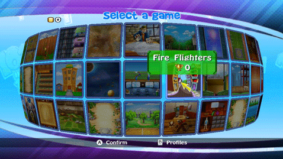

9 |
Game Selection Menu |
 |
|
 In the Game Selection menu, there are three kinds of icons:
You can scroll the games, just by moving the cursor to the desired edge of screen. To select a game just point at it with the Wii Remote. You will see the high score for unlocked games and the unlock price for the games that still are locked. Press There is also a special icon that randomly chooses a game for you. Select it and it will choose an unlocked game for you. |
|||||||||

 to play a game or unlock it.
to play a game or unlock it. |
 |
 |